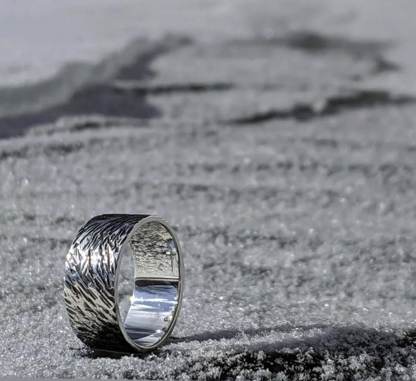
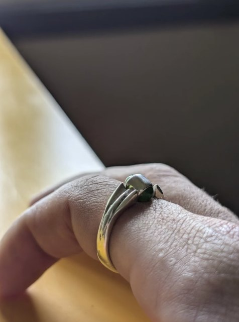
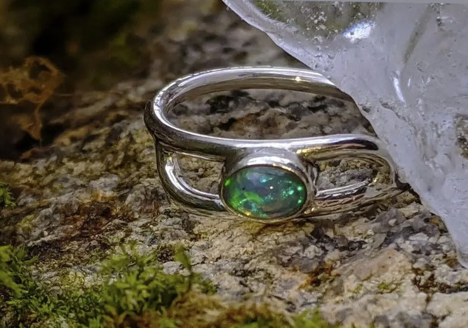
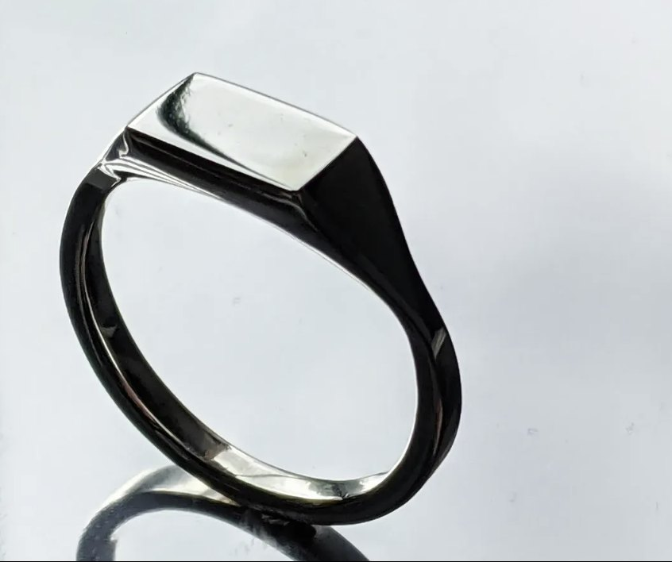
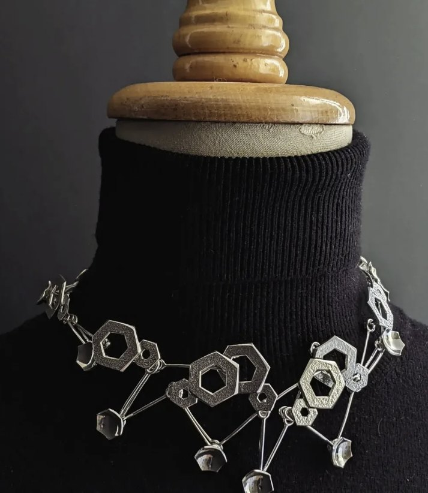
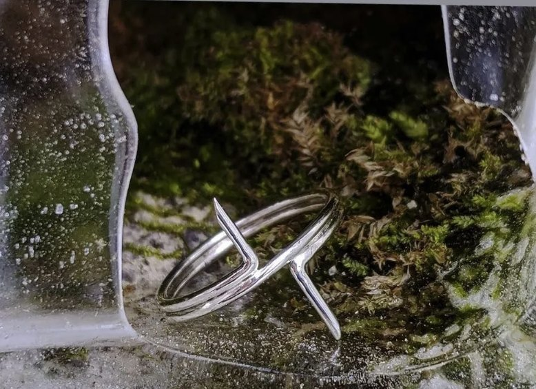
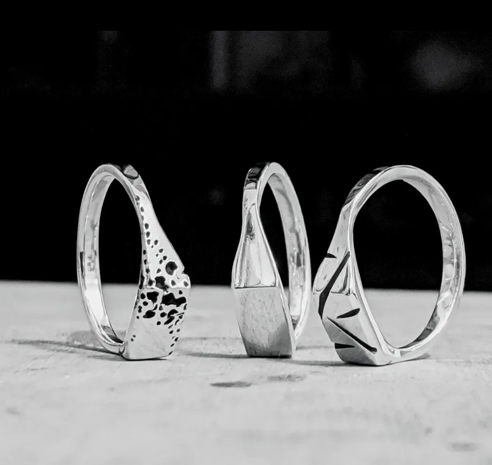
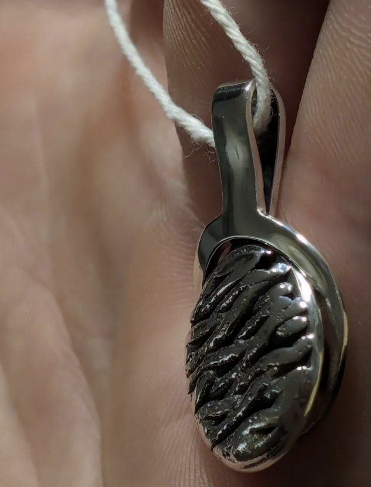
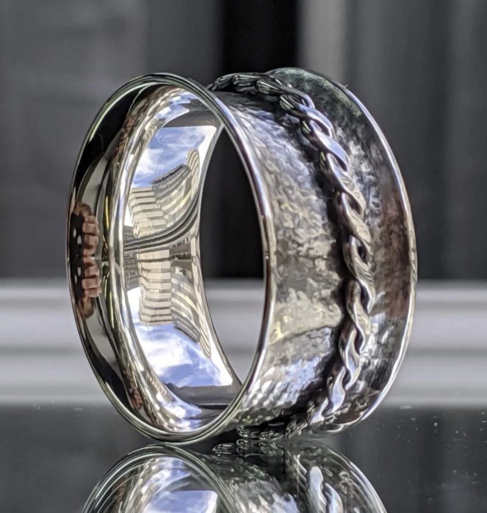
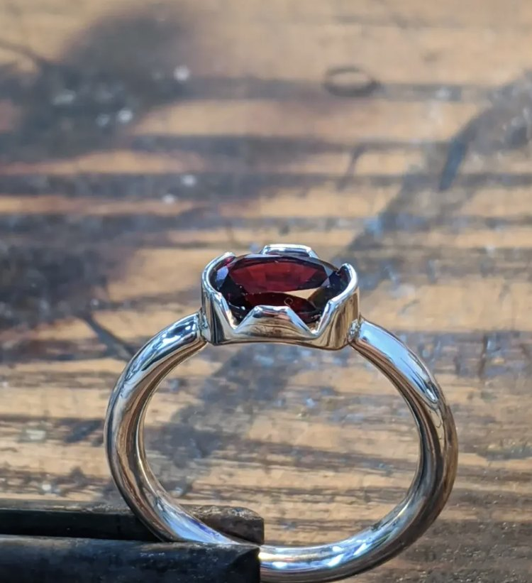

Le mortier tient la pierre. Ici, chaque bijou est dessiné avec vous, façonné à la main, et n'existe qu'une fois.
Aucune collection, aucune série. Les pièces montrées ici ont déjà trouvé leur personne ; la vôtre reste à dessiner.










De l'idée à la pièce
Une commande avance en quatre temps, à votre rythme. Vous voyez la pièce à chaque étape avant qu'on passe à la suivante.
Semaine 1
Première rencontre, à l'atelier ou en visio1 h
Vos idées, vos pierres, votre budgetnotés
Semaines 2 et 3
Croquis et choix des matériaux1 sem.
Validation du dessin et du devisavec vous
Semaines 4 à 7
Fonte et façonnage du métal2 sem.
Sertissage des pierres1 sem.
Polissage et finitions1 sem.
Semaine 8
Essayage et derniers ajustements30 min
Votre pièce unique, dans vos mains6 à 8 sem.
- Sur rendez-vous
- Tout est fait à la main
- @bijoux_mortier
Mortier est un atelier de joaillerie où tout se fait à l'établi : le dessin, la fonte, le sertissage, le polissage. On n'y garde aucun stock. Chaque pièce commence par une conversation et se termine entre vos mains.
Vous pouvez apporter vos propres pierres, ou l'or d'un bijou de famille : on le refond pour lui donner une seconde vie.
Avant de commencer
Combien de temps faut-il pour une pièce ?
En général, six à huit semaines entre la première rencontre et la remise. Pour une date précise, des fiançailles ou un mariage, dites-le dès le départ et on planifie à rebours.
Combien coûte une pièce sur mesure ?
Le prix dépend du métal, des pierres et du temps de travail. Vous recevez un devis détaillé avec le dessin, avant que quoi que ce soit soit fabriqué.
Puis-je fournir mes pierres ou mon or ?
Oui. Une pierre héritée, l'or d'une ancienne bague : on évalue ensemble ce qui peut être réutilisé, et comment.
Comment connaître ma taille de bague ?
On la mesure à l'atelier. À distance, on vous explique comment la prendre, et un ajustement reste possible après la remise.
Peut-on tout faire à distance ?
Oui. La rencontre se fait en visio, les dessins arrivent par courriel et la pièce vous est envoyée assurée, ou remise en main propre.
Comment entretenir mon bijou ?
Un chiffon doux et un peu d'eau tiède savonneuse suffisent. L'atelier peut repolir votre pièce sur demande.
Racontez-nous la pièce que vous imaginez.
atelier@mortier.ca
Sur rendez-vous seulement